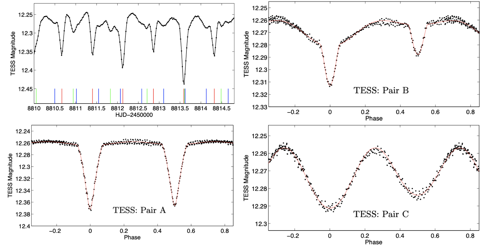
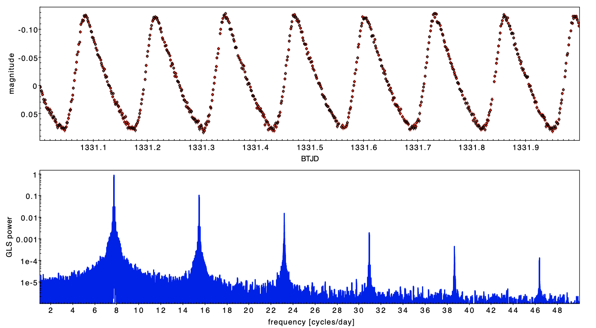

Welcome TESS followers to our latest news bulletin!
We would first like to highlight some of the exciting TESS-related news from MAST. Three separate TESS High-Level Science Products -- TASOC, TESS-SPOC, and TICA -- were updated this month, which increased the number of TESS light curves available on MAST by several million! You can find more information on the MAST News page.
This week, we are looking at three recent papers from the archive. Enjoy!
TIC 452991707 and TIC 452991693 as a Candidate Sextuple System with Three Eclipsing Binaries (Zasche & Henzl, 2022) :
Eclipsing binary stars are one of the principal components of stellar astrophysics, and enable the precise measurement of fundamental stellar parameters. Eclipsing binaries discovered in triple and higher order systems provide important insight into how stars form and evolve in multiple stellar systems. This paper presents the discovery of a rare candidate sextuple system composed of three eclipsing binaries, two associated with TIC 452991707 and one with TIC 452991693, with an on-sky separation of about 16 arcsec. Zasche & Henzl (2022) use long-cadence TESS data from sectors 17 and 18 to detect eclipses following three distinct periods, 1.04 days, 1.46 days, and 1.77 days. Their analysis indicates that the shortest-period eclipsing binary originates from TIC 452991693, the other two eclipsing binaries originate from TIC 452991707. Based on the available data, Zasche & Henzl (2022) estimate a preliminary outer orbital period of the sextuple system of about 7 years.
A search for transiting planets around hot subdwarfs II. Supplementary methods and results from TESS Cycle 1 (Thuillier et al., 2022) :
Hot subdwarfs, also known as extreme horizontal branch stars, are compact, hot, He-burning post-red-giant branch stars. These objects are prime targets for studying stellar and planetary evolution beyond the main sequence. However, to date, there are no confirmed planets around them. This paper presents results from a project aimed at performing systematic search for planetary transits in the lightcurves of hot subdwarfs observed by space-based telescopes, and determining the occurrence frequency as a function of planet radius and orbital period. Thuillier et al. (2022) studied 792 hot subdwarfs observed by TESS in short-cadence mode during cycle 1. The authors identified a total of 352 potential signals in 243 targets; 46 of these signals survived further vetting and validation, of which 30 were promoted for follow-up observations. Several of these signals have been attributed to eclipsing binaries or transiting white dwarfs. Thuillier et al. (2022) report that no confirmed planetary signals have been identified at the time of writing, and note that they are able to detect transiting objects as small as 2 REarth, with orbital periods shorter than 15 days, and Gaia magnitudes between 13 and 14. The authors also ruled out the presence of 3 REarth planets with periods longer than 1 day around 90% of the studied hot subdwarfs, and 0.5 REarth planets around 50% of the hot subdwarfs.
A TESS search for substellar companions through pulsation timing of δ Scuti stars. I. Discovery of companions around Chang 134 and V393 Car (Vaulato et al., 2022) :
Delta Scuti stars are population I pulsators residing in the classical Cepheid instability strip, and one of the least explored type of stellar hosts in exoplanet searches. The prominent stellar variability of these stars presents a clear challenge for the two most productive exoplanet detection methods, transit observations and radial velocity measurements. This paper presents the search for exoplanets around δ Scuti variables adopting a different technique -- phase modulations in pulsation timing caused by the light-travel-effect from an orbiting body. Vaulato et al. (2022) performed harmonic analysis and light-travel-time modeling on the short-cadence data of two high-amplitude pulsators, Chang 134 and V393 Carinae, and detected periodic modulations in both systems. The authors argued that the modulations are consistent with the brown dwarf in orbit around Chang 134 with a period of about 82 days and mass msini = 43.1+/-4.7MJup, and a more massive body (msini ~ 0.1-0.17 MSun) in orbit around V393 Car with an unconstrained period. Vaulato et al. (2022) note that future TESS observations would help constrain the eccentricity of the inferred orbits of these companions.
 Fig. 1: Taken from Zasche \& Henzl (2022). Upper left panel: TESS lightcurve of TIC 452991707 and TIC 452991693 showing three sets of eclipses form binary A, B, and C. Lower left and right panels: Phase-folded lightcurves on the corresponding orbital periods.
Fig. 2: Taken from Thuillier al. (2022). Results from their SHERLOCK pipeline. The upper panel shows the TESS lightcurve of TIC 142875987 observed in sectors 4. A clear secondary eclipse is seen in the data. The middle panel represents the phase-folded lightcurve zoomed-in on the primary eclipse. The lower panel represents the signal detection efficiency (SDE) as a function of the parched period.
 Fig. 3: Taken from Vaulato et. al. (2022). Upper panel: TESS lightcurve of Chang 134 (TYC 9158-919-1) from Sector 1. Lower panel: Generalized Lomb-Scargle periodogram of all available ETSS data (nine sectors).